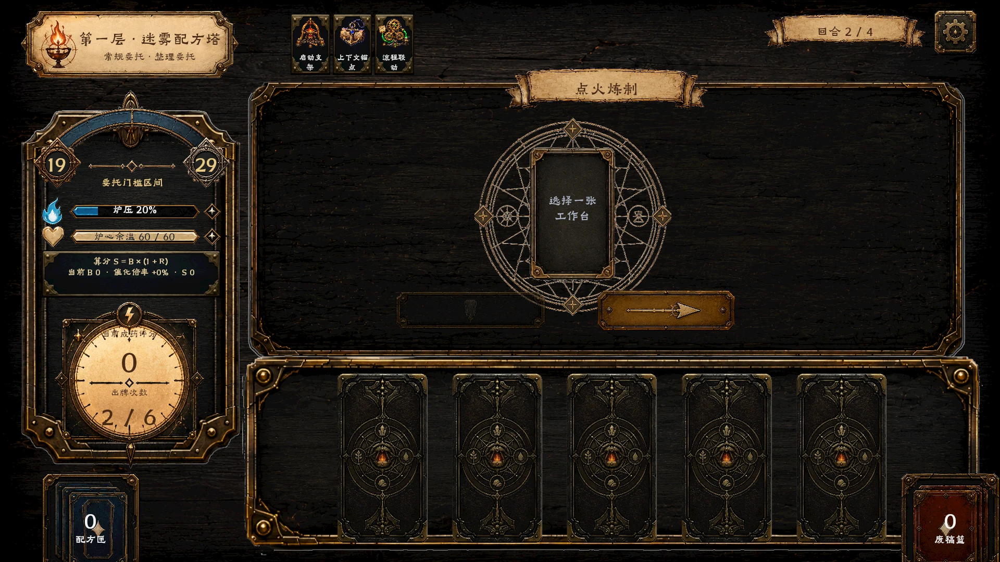
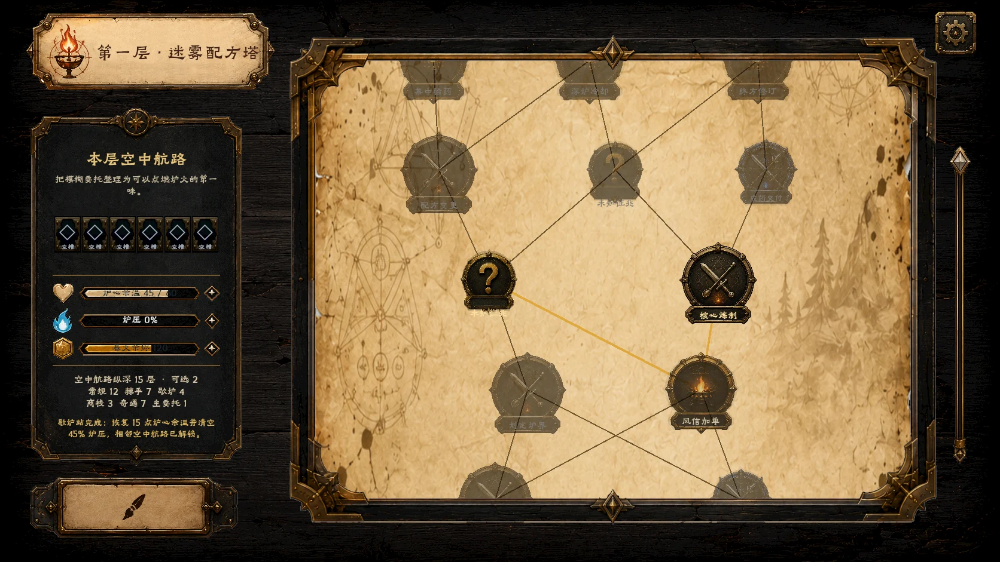
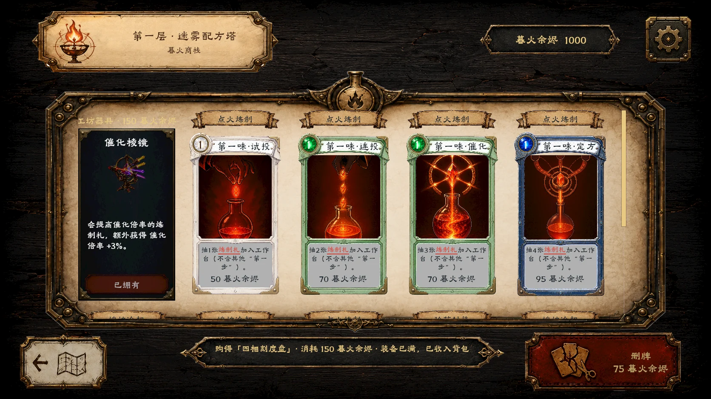
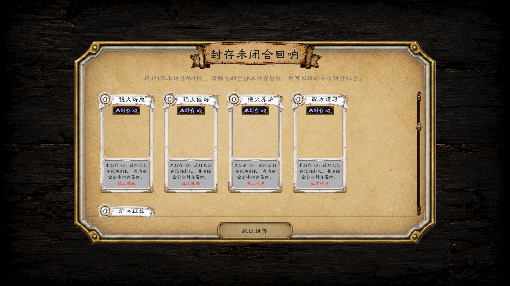
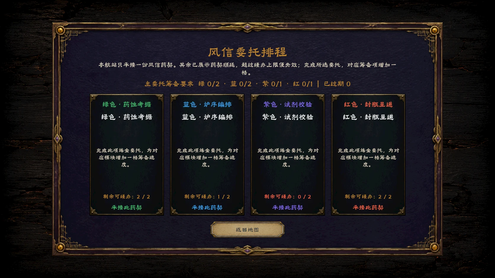
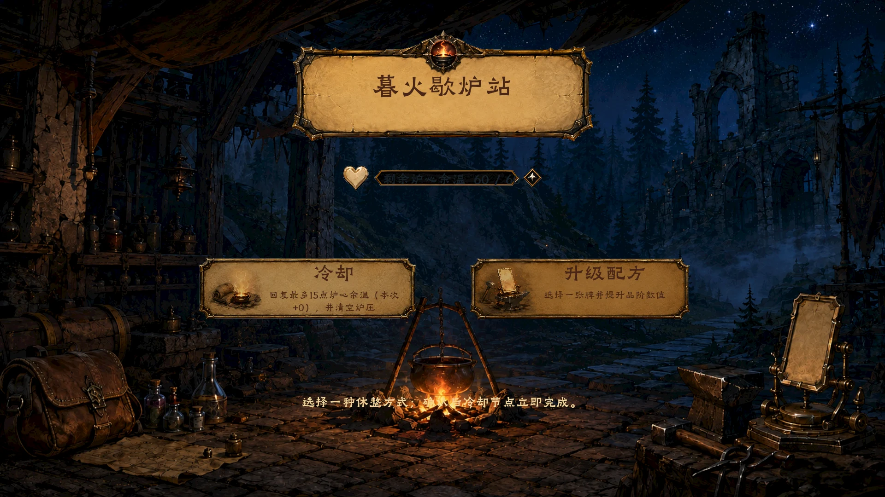
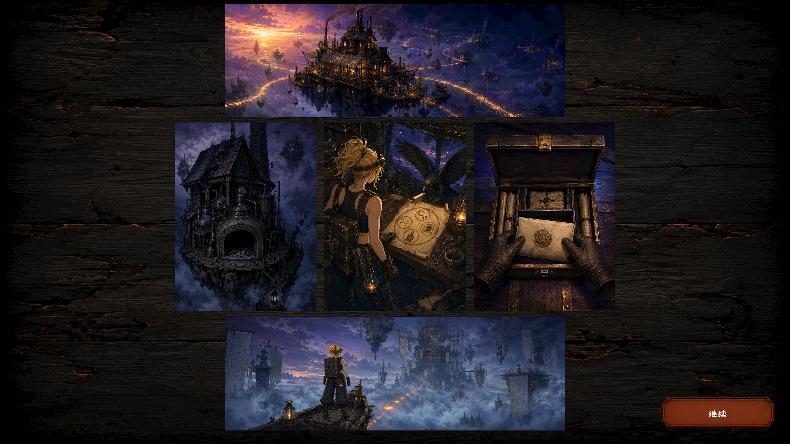

启动之前：缺少可执行的第一步
任务模糊或选择过多时，单纯提醒专注无法解决行动入口缺失。设计需要让“接下来做什么”变得可见。
严肃游戏 / 卡牌 Roguelike · 2026

《时间边界》是一款以工作与休息的边界为主题的卡牌类严肃游戏。玩家在“暮火工坊”的炼金世界中，经历计划、执行、收尾与休息四个阶段，在有限资源、未完成的任务与外部委托之间作出选择。项目希望让“何时开始、做到多少、如何停下”成为可以观察和反思的游戏体验。
前期调研包含 38 份问卷与 7 份访谈记录。问卷样本由 18 名大学生、3 名研究生、3 名入职 1–3 年的职场人、12 名工作超过 5 年的职场人及 2 名其他身份受访者组成。访谈从最近一天的真实经历展开，追问任务启动、消息响应、停止工作与进入休息的过程。
在“下班／下课后是否仍想着未完成的任务”一题中，15 人选择“经常”、5 人选择“几乎一直如此”，合计 20／38 人；另有 15 人选择“偶尔”、3 人选择“从不”。这些结果用于定位后续访谈问题，属于小样本探索，不作为普遍人群的发生率。
早期问卷分析将问题集中在“难以结束工作”和休息的负罪感。访谈进一步表明，有些人可以自然休息，有些人需要的是明确第一步，也有人在新消息激活责任后重新投入。因此，后续设计把“未闭合状态”作为线索：行动虽然暂停，下一步、完成标准或责任归属仍未确认。
任务模糊或选择过多时，单纯提醒专注无法解决行动入口缺失。设计需要让“接下来做什么”变得可见。
碎片化娱乐可能暂时转移注意，未处理的任务仍会回来。收尾应留下进度、停止原因、下一步与等待条件。
消息压力与角色责任有关，朋友联系也可能提供支持。重点在于区分真正紧急的请求、可以协商的责任与可以延后的信息。
访谈保留了休息无负担的情况，避免把所有人归为同一问题。游戏允许玩家识别自身模式，并尝试不同的合理策略。
前期工具分析从记录、内容生成、排程、专注计时、状态保存与放松支持等功能出发。结合访谈，项目关注的是这些环节之间仍需用户自行完成的判断：是否值得被打断、责任属于谁、本次做到多少、能否停下，以及下次如何继续。
这一分析将作品引向可试错的严肃游戏：用有限资源和跨阶段后果呈现选择，而不是要求玩家每天维护一套新的打卡系统。设计目标是帮助玩家辨认行动与责任的边界；是否能迁移到日常生活，仍需后续验证。
炼金工坊为抽象的时间管理提供了具体的动作隐喻：备料对应计划，炼制对应执行，封装对应收尾，冷却对应休息。四个阶段使用各自的卡组，前一阶段的选择会影响后续可用的资源与空间。
整理信息，揭示可执行的行动，减少在目标不清时直接投入的消耗。
在目标与资源之间权衡投入，关注继续出牌的边际代价。
用封存动作处理已经使用的执行卡，为下一阶段腾出空间。
观察未收尾的行动如何占据休息空间，重新安排恢复与推进的节奏。
执行卡起初隐藏，计划卡逐步揭示或整理行动。盲目投入会立即消耗资源，使“先明确下一步”成为有意义的选择。
目标范围并不完全明确；达到显示的下限后，继续执行会增加能量消耗，并挤占休息卡空间。玩家需要判断何时转入收尾。
使用过的执行卡需要通过收尾卡封存。未封存的卡会进入休息手牌，占据位置并影响恢复，让未完成感有可见的后果。
在节点中选择委托，并结合信息、执行、检验、交付的准备情况决定顺序。有限的延后次数让优先级与可承受的责任成为取舍。
在规则说明中，卡牌代表需要玩家当下判断并执行的行为，例如检索、拆解、核验、记录和锁定；遗物代表模板、自动保存、上下文锚点或通知过滤等持续支持。辅助工具可以降低操作成本，但不会替玩家判断任务是否足够、是否应该停止。
任务得分与精力分别承担不同作用：得分判断必要目标是否完成，剩余精力影响后续行动；过程中的过度投入、收尾缺失或休息被侵入则以事件反馈呈现。这样的分工使玩家同时看见成果与行动代价。
原型使用 UE5 C++ 与运行时 UMG 界面实现，包含分支地图、遭遇、商店、休息和首领节点，以及跨关卡保留的卡牌与资源状态。下方展示的是实际原型中的菜单、遭遇、地图与委托界面。
前期通过表格整理卡牌参数与组合，并在原型中迭代规则反馈、中文提示和界面操作。后续试玩将重点观察：玩家能否找到下一步、能否解释停止的依据、能否保留可接续的信息，以及如何判断外部委托的优先级。目前展示的是设计与原型迭代，尚未形成行为改善效果的验证结论。
点击图像放大查看，可使用左右方向键切换。






